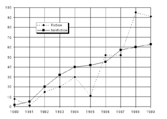

SALES BY CATEGORY FOR GRAMMERCY PRESS, 1980–1989
(in thousands of books)

Which of the following periods showed a continual increase in the sales of fiction titles?
1980–1982
1982–1984
1984–1986
1986–1988
1987–1989